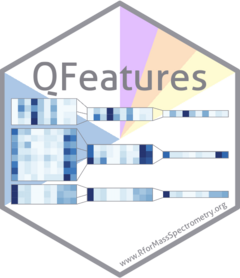

Quantitative features for mass spectrometry data



What is QFeatures?
QFeatures is a Bioconductor package that provides infrastructure to management and process quantitative features for high-throughput mass spectrometry-based proteomics assays. It provides a familiar Bioconductor user experience to manage quantitative data across different assay levels (such as precursors, peptide spectrum matches, peptides and proteins or protein groups) in a coherent and tractable format.
If you are familiar with the MSnbase package, QFeatures could be summarised with:
Evolving
MSnSetdata towardsSummarizedExperiment, but for proteomics data.
Getting started
The QFeatures class is used to manage and process quantitative features for high-throughput mass spectrometry assays. See the QFeatures introduction to get started and the Processing quantitative proteomics data with QFeatures vignette for a real-life application. Visualisation of quantitative mass spectrometry data contained in a QFeatures object is illustrated in the Data visualisation vignette.
License
The QFeatures code is provided under a permissive Artistic 2.0 license. The documentation, including the manual pages and the vignettes, are distributed under a CC BY-SA license.